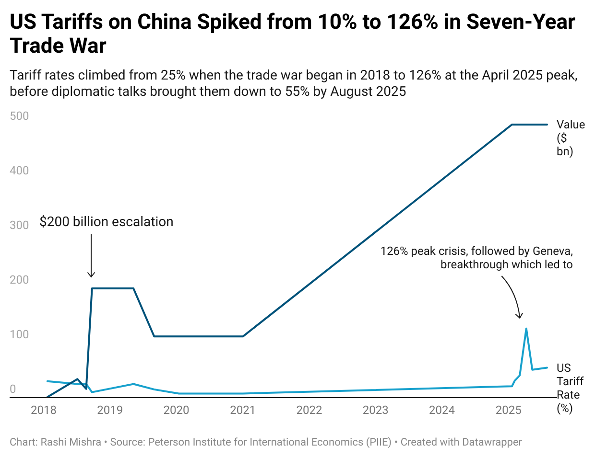

The Demented Nine-Toothed Face of the Toy Industry’s Tariff Troubles
When unprecedented tariffs crushed the toy industry in 2025, most companies froze production and canceled orders. Pop Mart took the opposite approach, leveraging air freight, premium pricing, and viral celebrity endorsements to turn Labubu from sketch to $419 million phenomenon while competitors struggled to survive.
On June 17, 2025, Chinese customs officers at Wuhan Tianhe International Airport seized 144 mysterious collectibles from two passengers trying to smuggle an item that has sparked white-hot demand, inspired countless counterfeits, and spawned a global social media sensation, the sharp-toothed elf character known as Labubu. The “blind boxes” — where the buyer can’t see the exact version of the item they are getting — were being smuggled through the “no declaration” channel, part of a broader crackdown that has seen 462 Pop Mart toys confiscated across China since April. The seizure happened as the global toy industry reeled from a brutal trade war that saw U.S. tariffs on Chinese imports soar to 145% before being temporarily cut to 30%, threatening to force almost half of small and medium toy companies out of business. Retailers paused orders, factories idled machines, and CEOs scrambled supply chains. Yet amid this chaos, the ugly-cute character defied every economic prediction, generating $419 million in revenue for Pop Mart in 2024, a staggering 726% increase from the previous year.
Labubu became an unlikely symbol of economic resilience against unprecedented trade barriers. A review of customs seizures records, financial reports, and court documents, reveals a two-pronged response to the steep Chinese tariffs. Pop Mart shifted 10% of production to Vietnam, which exposed them to lower duties, while implementing U.S. price hikes from up to $28 on new collections to absorb 30% tariffs. This strategy enabled Pop Mart to achieve explosive first-quarter revenue growth up to 170% while traditional competitors struggled with margin compression and order cancellations.
As federal courts rule on the legality of Trump's tariffs and the Supreme Court considers urgent appeals from toy companies like Learning Resources, Labubu’s story illustrates the brutal calculus reshaping global manufacturing, the rise of adult collectors now driving industry growth, and the complex supply-chain transformations defining the modern toy industry’s fight for survival.
Seven Years of Economic Warfare: The Trade War That Transformed Global Commerce
The U.S.-China trade war spanning seven years from 2018 to 2025 marks the longest and most disruptive trade conflict in modern history, with profound implications for global manufacturing and the toy industry. It began in January 2018 when President Trump imposed 30% tariffs on solar panels and washing machines, quickly expanding to target $34 billion of Chinese imports with 25% levies in July 2018. September 2018 saw tariffs on an additional $200 billion of goods, and in May 2019, a 10% levy on that tranche doubled to 25%, causing acute supply-chain stress across industries from electronics to apparel.

What began as targeted duties on a handful of products rapidly escalated into sweeping, economy-wide measures. After the initial hikes in early 2018, the tariff rate climbed steadily through the first major expansion on $200 billion of goods, then plateaued during the Phase One truce in January 2020, when China pledged an extra $200 billion in U.S. purchases over two years but met only 60 percent of those targets. The curve remained flat through the Biden administration’s maintenance of existing tariffs and the imposition of semiconductor export controls in October 2022, before a second round of policies in 2025 sent rates soaring to a crisis-level peak of 126.5 percent in April. The subsequent steep drop in May 2025, marked “Geneva breakthrough” on the graph, underscores how diplomatic intervention was required to pull back from near-embargo levels and stabilize trade relations, yet even with that reprieve, the toy industry and other sectors have continued hedging against future shocks.
Pop Mart’s journey from niche-Chinese company to global powerhouse unfolded entirely within this tumult. Founded in 2010, the company went public in December 2020, the same month China and the U.S. formalized Phase One, enabling international expansion free of tariffs. Pop Mart's revenue rose from $244 million USD in 2020 to $1.81 billion USD in 2024, driven largely by Labubu, created by Hong Kong artist Kasing Lung in 2015 and licensed by Pop Mart in 2019.
However, the toy industry's protected status ended abruptly in 2025. After Trump's return to the presidency in January, a 10% baseline tariff on all Chinese imports took effect in February, sparking immediate order cancellations from U.S. retailers. April's escalation to 145%, the highest rate in modern history, threatened to collapse China-centric production models. A temporary reduction to 30% in May during a 90-day pause offered a brief window before potential further hikes.
Current Chaos: American Industry Under Siege
By August 2025, U.S. industries faced overwhelming uncertainty. U.S. tariffs remained at 30%, Chinese retaliatory duties at 10%, and 70 other nations adjusted rates between 15% and 41%. CEOs reported shifting half their time to tariff strategy , up from 10% before the war, as deadlines and rates fluctuated five times in 2025. Notifications arrived via social media rather than diplomatic channels, adding to confusion.
Major retailers likewise confronted impossible trade-off decisions. Walmart employees documented toy price spikes of 38% to 45%, with a Jurassic World T-Rex toy jumping from $39.92 to $55.00. Walmart CEO Doug McMillon warned that absorbing the tariffs entirely was impossible given thin margins. Target called price hikes a “last resort,” cutting forecasts as second quarter sales fell 5.7%. Home Depot leveraged scale to shield some customers but conceded product discontinuations were inevitable.
Small retailers found opportunity amid the chaos. Citing the competitive nature of the toy business, the toy sellers I spoke with were hesitant to reveal the source of their Labubu supply. Toy sellers 101 Studio Soho, an Asian fashion boutique in New York City’s Soho neighborhood, exemplified the entrepreneurial response. “Given the demand and craze for Labubus, we thought we could also diversify and sell these in our store,” said Coco Yang, the boutique manager. The store employs multiple sourcing strategies. “We buy from resellers, some from Pop Mart online, and some directly from Chinese sellers in China.” Each figure is sold for $90, with varying cost structures, $30 online, $50 from resellers, and $30-40 from Chinese sellers. “The Macron ones are mostly in demand. Customers were mostly women adults but now are more likely teenagers and kids,” the owner noted.
“I would say that they are a little calmer now. They are not as expensive as they used to be. I think the highest I have seen them be like each was like $80. That’s when there was really high demand... But now they went down to like $60,” said Cassie Corona, the store employee at AVPopShop located in Lancaster, California.
Several gift shops in midtown Manhattan are selling Labubus, with many tourists coming in looking for them. NYC Gifts Megamart 4 on 7th avenue sells the original ones with the Pop Mart code for about $35. The same Labubus is sold as low as $25 in shops such as I LOVE NY GIFT SHOP on 7th avenue.
However, not all retailers see opportunity in the Labubu craze. Some have abandoned the market entirely due to concerns about trend volatility. “We don’t carry it any more because we feel that they may go out of demand, all of it, very soon. They are like Sonny Angels, stickers for the back of the mobile. They were too a rage, sometime ago, we carried them too, then stopped getting them, because such things are just a trend thing, and then in a few weeks, people get bored of it.,” said Adam Nomeh, a 24-year-old store employee at NYC MegaMart on 7th Avenue. The store carried Labubus for just two weeks from late May to mid-June before discontinuing them entirely.
“They are still pretty up there just because Popmart doesn’t do wholesale. So they won’t sell to stores. They only sell on their website,” said Corona.
Store owners I spoke with said the source of sellers' Labubus is a closely held secret in the competitive toy market.
“So we actually don’t get from Pop Mart. So I don't know the exact sources, but all I know is that it's like a second party that my boss gets it from. So it’s not even from Popmart itself,” added Corona.
The Toy Industry Under Siege: Christmas at Risk
The U.S. toy market, valued at $42 billion and delivering childhood traditions each holiday, suddenly faced an existential crisis. With 80% of toys sourced from China, the industry lost its tariff exemption in 2025. April's record 2.2% price surge in toys far outpaced the 0.1% overall inflation rate.
“There was a good amount of people demanding Labubus a few weeks ago. Now it is calmer. But there is a point where everybody that came in was just asking for Labubus and even 90% of our calls were asking about Labubus,” said Corona.
Key players reported crippling costs: Mattel’s $270 million in annual duty bills prompted supply-chain diversification to Vietnam and India. Hasbro harbored $180 million to $300 million in tariff exposure, cutting inventory to avoid a glut. MGA Entertainment, maker of Bratz dolls and L.O.L. Surprise! toys, saw CEO Isaac Larian warn that “the life of my business, 46 years, is on the line,” as the company planned high double-digit price increases and potential U.S. layoffs.
A Toy Association survey conducted in April 2025, of 410 small and medium manufacturers revealed 64% canceled orders, 80% of mid-sized firms paused production, and 45% to 50% faced closure within weeks if tariffs persisted, an extinction-level event for an industry dominated 96% by small businesses.
Christmas 2025 production, which industry executives say typically begins in April for an October retail launch, stalled until late May due to 145% tariffs, imperiling holiday shelf-stocking.
“Honestly, month wise, I would assume or kind of guess it was probably like last month (July) it was maybe the hottest (high sale in the store) that it’s been," said Corona.
“April, May, June and a portion of July are the months where all of the toys that end up under the Christmas tree as gifts this holiday season are actually produced,” Greg Ahearn, CEO of the Toy Association, said in a news report. By July, the absolute deadline, too few toys would clear customs, threatening unprecedented shortages of Play-Doh, Barbies, and hot collectibles.
The blind box format that drives Labubu’s mystique has created unexpected customer service challenges for retailers. “The reaction of the people wasn't good. There was a kid who came like twice in a day. Once in the morning, and then in the evening. He particularly wanted a pink one. But since these are Blind Boxes, we can’t guarantee the color of choice. He cried so much,” said Nomeh, illustrating how the unpredictable nature of collectible toys can lead to customer disappointment and operational difficulties for retailers managing demand.
While traditional toy companies struggled with sea freight delays and mounting tariff uncertainties, Pop Mart pioneered a radically different approach that exemplified the industry's invisible transformation. The collectibles giant leveraged air freight as a competitive weapon, recognizing that premium toys like Labubu operate on entirely different economics than commodity products.
David Applegate, founder of freight analytics company ImportYeti told me that collectible toys represent a fundamental departure from traditional shipping models: "Those little pop things have effectively a just-in-time inventory where people don't want to put it on a boat because the demand is so high for certain ones. They put it on an airplane so they get it here quicker." This shipping method choice became crucial as tariffs created additional urgency—every day in transit represented escalating duties and lost sales opportunities.
The speed advantage proves decisive in collectibles markets. While sea freight requires 21 to 35 days from Guangdong warehouses to U.S. distribution centers, air cargo delivers Labubu shipments within 5 to 10 days, according to customer reports. This 75% reduction in transit time allows Pop Mart to respond to viral demand spikes that can emerge and peak within weeks, as demonstrated by the Lisa effect in April 2024.
However, this air freight strategy creates a significant data blind spot. Applegate explains that import tracking systems like ImportYeti "only includes sea shipments coming into the U.S. No land, no air. Those are not public information." This means much of Pop Mart's actual import volume remains invisible to traditional trade analysis, potentially explaining why the company's explosive growth caught competitors and analysts off guard.
Air freight costs 13 to 15 times more than sea freight, and becomes economically viable for premium collectibles. While standard toy imports average $2.25 per unit, Labubu's $22 to $28 retail price provides sufficient margin to absorb air freight premiums while maintaining profitability. This shipping cost structure creates an effective moat against commodity toy competitors who cannot afford similar logistics investments.
From Sketch to Shelf: The Epic Journey
Labubu's creation-to-consumer journey epitomizes global manufacturing complexity : a 6,000-mile, 75 to 120-day odyssey touching 60 pairs of hands. It starts in Hong Kong artist Kasing Lung's studio, taking two to four hours capturing Labubu's trademark nine serrated teeth, pointed ears, and mischievous grin, then moves to Pop Mart design teams in Beijing and Dongguan for feasibility and branding approvals across two to three review cycles.
Approved sketches undergo digital sculpting in Dongguan, requiring four to eight hours translating 2D artwork into a precise 3D model, ensuring texture maps align for plush-over-vinyl overlays. Master mold makers then spend four to six weeks crafting silicone molds, each yielding just 300 to 500 perfect vinyl casts before replacement, a production bottleneck.
Vinyl casts cure over two to four hours per batch, then undergo multi-stage quality checks. Hand painting, Labubu's soul, requires three to six hours per figure: eye artists work roughly 60 minutes, facial painters roughly 45 minutes, body artists roughly 90 minutes, and detail specialists roughly 30 minutes, each trained for months. This artisan process limits output to 80 standard dolls per day per painter; rare editions demand up to four hours each.
After a 99.2% pass rate inspection, figures enter Pop Mart's signature blind-box packaging, taking five minutes to assemble and two to three minutes to seal, randomized to preserve mystery. Guangdong warehouses consolidate shipments for ocean transit: 21 to 35 days to the U.S. West Coast, subject to port congestion, weather, and rising shipping costs. Customs clearance follows 30% tariffs, then domestic trucking to distribution centers in California, Texas, and New Jersey, and final retail prep lasting one to three days before shelves.
Supply constraints from official channels have driven consumers to alternative sources, with many resorting to resellers on Facebook marketplace, Reddit, Mercari, Shein, and Alibaba. According to 101 Studio Soho’s Yang, "at each stage from Pop Mart to the resellers about $20 gets added," illustrating the markup structure throughout the distribution network.
Bottlenecks including mold replacements, artisan labor scarcity, 30% to 145% tariff uncertainty, and viral demand spikes make shortages inevitable despite the capacity to make 10 million Labubus per month.
From $12 Manufacturing to $28 Retail
Labubu's landed cost, the complete expense of manufacturing, shipping, and delivering each Labubu to U.S. stores including all tariffs and fees, breakdown illustrates premium economics. Raw materials cost $2.50 to $3.50, including food-grade PVC core, synthetic fur, and paint. Artisan labor adds $3.80 to $6.20 for three to six hours of hand painting at $4 to $5 per hour wages. Overhead and packaging contribute $2.80 to $4.20. Shipping and insurance add $0.60 to $0.90. The 30% tariff contributes $3.60 to $4.20.
The total landed cost, of approximately $15 to $18 supports $22 to $28 retail pricing. While generic toy imports averaged $2.25 per unit, Labubu's premium positioning delivers roughly 60% system margins, financing $50 million in Vietnam facility investments and maintaining profitability amid trade war turbulence.
The Viral “Lisa” Moment
Labubu’s viral ascent underscores how social-media-driven cultural commerce intersects with global trade realities. The pre-viral foundation phase from 2019 to 2023 coincided with escalating trade tensions, U.S. toy imports from China fluctuated from 5.1 billion units in 2020 to 8.0 billion in 2022 before dropping to 5.5 billion in 2023 as tariff uncertainty mounted.
The “Lisa moment” in April 2024, when K-pop supergroup BLACKPINK’s Lisa hugged a giant Labubu, reached 106 million followers and generated $15 million in media value.
“I believe the popularity did become because of some celebrities. There’s actually a group called Blackpink that one of the members whose name is Lisa posted that she has a Labubu on her designer bag and ever since then Labubus became really popular,” said Corona.
This viral explosion occurred just as 2024 toy imports rebounded to 6.4 billion units, a 15.7% increase from 2023, with tariffs holding steady at 7.0%. Pop Mart reported a 726% sales boost within weeks of Lisa’s endorsement, even as the broader toy industry navigated trade war volatility.
Back when tariffs were relatively stable at 7% in 2024, celebrity endorsements drove unprecedented demand: Rihanna’s Lychee-Berry Labubu atop her Louis Vuitton bag blurred toy and luxury categories, while Kim Kardashian’s April 2025 Story showcased family adoption and David Beckham's May 2025 clip validated male collectors. However, by 2025, as tariffs climbed toward 30% and trade tensions intensified, U.S. toy imports collapsed 65% to just 2.2 billion units, even as TikTok unboxing content amassed 500 million views and Instagram lifestyle posts built communities around rare variants.
This paradox, viral demand surging while import volumes plummeted, illustrates how the 2025 trade war reshaped global commerce: Pop Mart’s celebrity-driven marketing succeeded culturally but faced supply chain disruption as customs seizures increased and importers struggled with $245 million in tariff charges on the reduced toy trade volume.
Adoption began in Asian-American hubs like LA, San Francisco, and NYC, then spread through college campuses and cultural meetups, including Washington Square Park flash mobs. Pop Mart mainstreamed the phenomenon through 50-plus outlets, airport vending machines, and collaborations with Uniqlo, Olive Garden, and United Airlines.
The market’s volatility became evident in pricing patterns. Yang said that they have tracked the cycle. “We have been ordering these since January. They were in demand in March, and were sold for about $120 then. People found it difficult to get them from the legit Pop Mart website.
The prices remained as high as that in both March and April. Now they have gone down, and are not as much in demand as before.” Despite cooling demand, sales remain consistent at “22-30 every week.”
“I would say it’s still calmer now compared to what it used to be in previous months,” said Cassie Corona, the store employee at AVPopShop located in Lancaster, California.
Financial Triumph: Defying Economic Gravity
Pop Mart’s U.S. business exploded in early 2025: its first-quarter revenue alone was nine times what it earned in the entire U.S. toy market in 2024. Last year, the company brought in $1.8 billion in total sales, more than double the year before, and turned that growth into $460 million in profit. Overseas customers drove $700 million of those sales, a nearly fourfold jump. Even with steep tariffs, Pop Mart kept an eye-popping 66.8% gross margin, well above the 40% typical for toy makers, which helped fund a $50 million factory investment in Vietnam. Looking ahead, management expects first-half 2025 revenue to triple and profits to more than quadruple. Pop Mart’s market value climbed to $44.9 billion, and founder Wang Ning saw his net worth swell to $21.1 billion.
The Manufacturing Empire: Guangdong's Dominance
Guangdong is now the heart of the art-toy world that fuels Labubu’s rapid growth. Dongguan alone is home to over 4,000 toy factories, with nearby Chenghai accounting for about 15% of that capacity and Shenzhen producing 8% of the premium collectibles. Guangzhou acts as the region’s logistics gateway. Major partners like Beijing Pop Mart Cultural & Creative and Shantou Menggao handle the bulk of production, together covering roughly two-thirds of output, while dozens of smaller specialists keep factories running at 10 million units per month. This network scaled more than thirtyfold in under a year, all without sacrificing the hand-finished quality that collectors demand.
Pop Mart operates through an OEM (original equipment manufacturer) model, contracting with local producers rather than owning factories directly. By 2020, more than 30 factories in Dongguan had become key suppliers to Pop Mart, with over 70% of the company's total production now concentrated in the region. Key contract manufacturers like Shantou Menggao Toy Industry handle specialized collectible production for Pop Mart, while Shipai Town serves as the manufacturing hub, offering a complete “design-prototyping-production-logistics-sales” industrial chain within a 5-kilometer radius. This integrated network maintains production capacity of approximately 10 million units per month while preserving the hand-finished quality that collectors demand, scaling production more than thirtyfold in under a year without sacrificing craftsmanship standards.
While US toy imports actually rebounded 12.1% in 2024 (and overall industry sales dipped only 0.3%), Pop Mart’s revenue more than doubled, soaring 106.9% from $0.89 billion to $1.78 billion and its stock surged roughly 600%, illustrating the power of emotional, designer-toy branding. By contrast, traditional toy stocks plunged about 20–40% in 2024. Mattel, valued at $5.47 billion, and Hasbro, at $10.79 billion, combined for just $16.26 billion, pale next to Pop Mart’s $47.03 billion market cap.
Copycats became a retail differentiator amid the Labubu craze. Store owners I spoke with described how counterfeit versions, dubbed “Lafufus” by collectors, have flooded the market at significantly lower prices. Authentic Labubus feature Pop Mart authentication codes on their boxes and precisely nine teeth, while the knockoffs often lack proper QR codes and may have eight or ten teeth instead. The fakes, selling for around $35 compared to $90 for originals, have created a parallel market where retailers use quality control and authentication features as selling points.
This pricing complexity reflects broader market dynamics, with NYC Gifts Megamart 4 offering authenticated figures for $35 while maintaining sourcing secrecy, and discount retailers like I LOVE NY GIFT SHOP pushing prices down to $25.
Yet the market’s volatility has prompted some retailers to abandon Labubu entirely. NYC MegaMart, which previously sold authentic Labubus at the manufacturer’s suggested retail price of $40 after sourcing directly from Pop Mart online, exited the market after just two weeks of sales. “They get hyped at first, and then decline. So, we always have to stop carrying them because we don't want to take risks in our business,” explained Nomeh, whose store measures product success through “revenue per tile, per display, based on square footage.” For Labubus, he noted, “the revenue did not show or was minimal for just a few weeks,” leading to their removal from inventory.
Labubu’s $419 million revenue in 2024, representing 23.3% of Pop Mart's total, exceeded many US toy companies' annual sales.
Macro Trade Context: $76.8 Billion in Toy Imports
The data reveals the massive commodity toy market that serves as Pop Mart’s competitive backdrop, America imported nearly $77 billion worth of toys from 2020-2025, with individual units averaging just $2.25 each. This vast, low-margin import foundation underscores how premium collectibles like Labubu can achieve extraordinary valuations by transcending the commodity positioning that dominates traditional toy trade.
Pop Mart’s 120 million-unit annual capacity represents 1.88% of 2024’s 6.39 billion toy imports, a remarkable share for a single brand. To handle this volume efficiently, the company concentrates shipments through just two West Coast ports: Long Beach (72.3% of imports) and Los Angeles (25%), allowing them to streamline customs processing and reduce logistics costs compared to competitors who scatter shipments across multiple entry points.
The Sharp-Toothed Symbol of Economic Evolution
Labubu’s journey from Kasing Lung’s sketch to a $419 million cultural phenomenon amid $76.8 billion in U.S. toy imports demonstrates that Pop Mart’s success wasn’t just about viral luck, it was the product of both emotional branding and strategic agility. By tapping into collectors’ emotions with its “ugly-cute” elf and surprise blind-box experience, Pop Mart created a premium aura that justified a price up to $28 where the average toy trades at $2.25. At the same time, it deftly navigated soaring tariffs, shifting production, concentrating shipments through key ports, and raising prices to absorb duties, so that the surge in demand translated into real economic gains. This blend of cultural resonance and trade-savvy moves shows that the strongest competitive advantage comes from marrying deep consumer insight with nimble operational strategy, no tariff can erase that.
The global toy industry may be under siege, but Labubu's empire is just getting started.

.png)